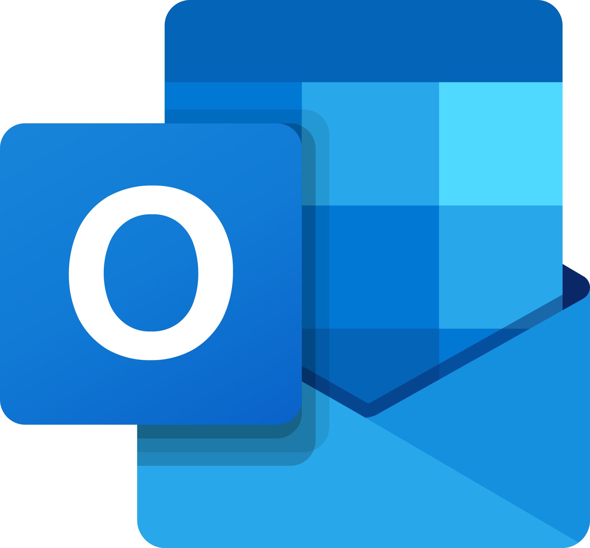

Schauen Sie sich den Ablauf an. Sie können das Video jederzeit anhalten. Alle Schritte stehen darunter auch zum Nachlesen.
Das Video ist momentan nicht erreichbar. Bitte wenden Sie sich an Ihre EDV.
Die drei Schritte
Alle Schaltflächen, die Sie dafür brauchen, finden Sie direkt in der App.
1.
Technische Daten sicher an die EDV senden
Dabei werden keine E-Mails, Kontakte, Termine oder Dokumente an die EDV gesendet.
Klicken Sie in DMH Backup auf der Startseite auf „Sicher an die EDV senden“. Im nächsten Fenster steht genau, welche technischen Kontodaten gesendet werden. Lesen Sie die Angaben und bestätigen Sie erst dann.
Im nächsten Fenster: „Sicher an die EDV senden“
2.
Kontakte übernehmen
Klicken Sie links auf „Kontakte“. Klicken Sie danach auf den dunkelroten Button „Einfach importieren“.
Links: Kontakte
Dann: Einfach importieren
Wählen Sie nun das Programm, das Sie bisher für Ihre E-Mails genutzt haben:

Outlook ClassicDas blaue Outlook-Symbol
ThunderbirdDas Thunderbird-Symbol mit dem Vogel
Sie sind nicht sicher, welches Programm Sie nutzen? Fragen Sie bitte die EDV.
3.
Kalender übernehmen
Klicken Sie links auf „Kalender“ und dann auf „Einfach importieren“. Wählen Sie wieder Outlook Classic oder Thunderbird – dasselbe Programm, in dem Ihre bisherigen Termine stehen.
Links: Kalender
Dann: Einfach importieren
Wann sind Sie fertig?
Wenn Sie alle drei Punkte erledigt haben, ist Ihre Vorbereitung abgeschlossen: